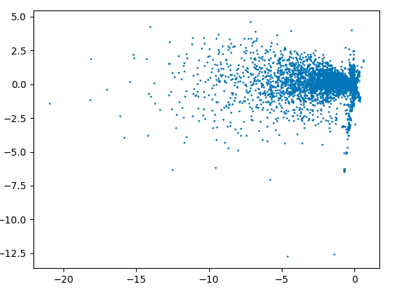
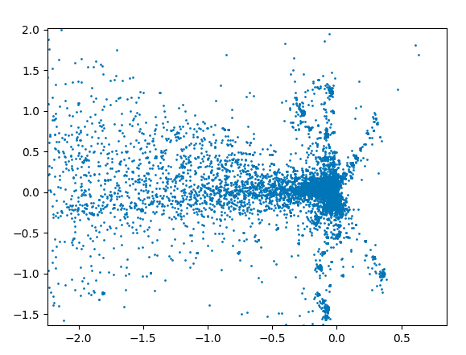
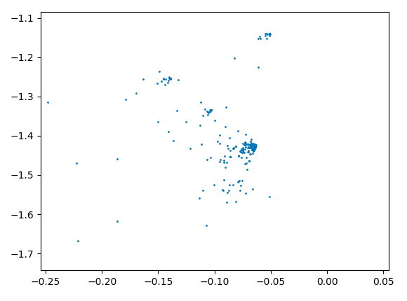
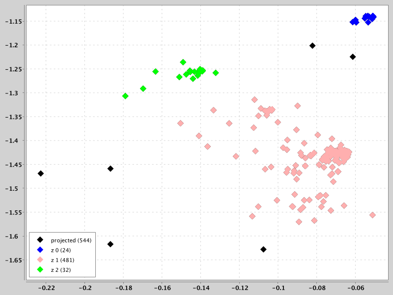
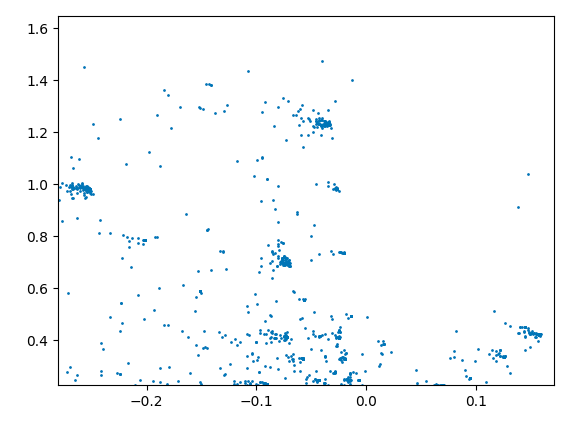
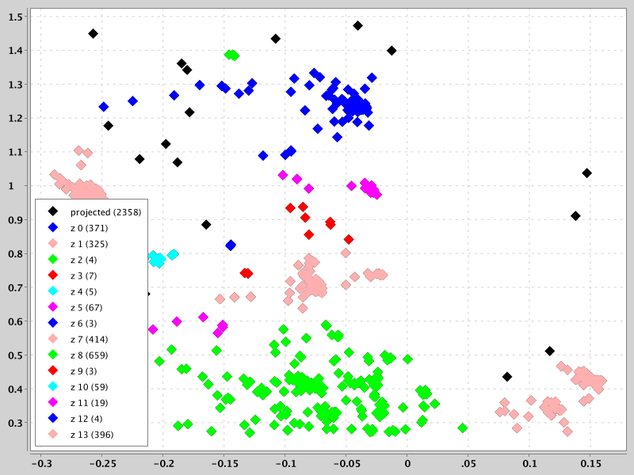

This project's algorithm is an unsupervised density based clustering algorithm. The algorithm does not require prior knowledge of the number of clusters, nor does it require a separation distance for association of points. The algorithm finds convex and non-convex cluster shapes in a statistically based manner that is reproducable. The algorithm learns the association distance of cluster membership by finding the background (surface) density distribution using histograms of the point separations. Once the critical distance for point association is determined, the algorithm finds points associated with one another, that is, clusters.
A few more details on the background surface density: The location of the background points in 2-dimensional space are likely an exponential distribution such as poisson or gaussian which means that a histogram formed from the 2-point separations can be fit by a Generalized Extreme Value (GEV) curve. The peak gives us the background density and separations smaller than that are clustered. One often assumes that the clustering scale should be 2.5 times the background noise scale, that is, the critical separation should be 2-3 times smaller than the separation found for background points.
The algorithm runtime complexity is roughly O(N X log2(N)). A previous version used an O(N) distance transform for the point separations, but the dataset must be dense for that to be an advantage.
Several dataset examples are shown below. The scatter plots and histograms below use d3 js
The same process can be used with the distances calculated from a brute force O(n^2) approach. This is demonstrated on a subset of the Amazon Fine Food Reviews dataset, which is very large, but sparse, that is a utility matrix of users versus products score is very spase. For this I put the java and python code in the test directory. The python code uses pytorch's sparse matrix and sparse linear algebra and matplotlib.pyplot. The java code uses a cluster finder from this project and xchart.
Usage as an API:
To use the code with default settings:
DTClusterFinder clusterFinder = new DTClusterFinder(points,
imageWidth, imageHeight);
clusterFinder.calculateCriticalDensity();
// or, set density instead of calculate (for use in pca or lda, for example):
//clusterFinder.setCriticalDensity(dens);
clusterFinder.findClusters();
int nGroups = clusterFinder.getNumberOfClusters();
List<Set<PairInt>> groupList = new ArrayList<Set<PairInt>>();
for (int k = 0; k < nGroups; ++k) {
Set<PairInt> set = clusterFinder.getCluster(k);
groupList.add(set);
}
The citation for use of this code in a publication is:
For use before Sep, 2015 http://code.google.com/p/two-point-correlation/, Nichole King, "Unsupervised Clustering Based Upon Voids in Two-Point Correlation". March 15, 2013. else https://github.com/nking/two-point-correlation Nichole King, "Unsupervised Density Based Clustering". September 25, 2015. The code is licensed under the MIT license, usable for commercial and non-commercial purposes: http://opensource.org/licenses/mit-license.php see LICENSE.txt in this project
The previous version of this code is presented in the previous web page.
Note that I wrote the core algorithm in this work (without the automated density calculation) several years ago and the results were part of a publication. What was published were the results from this algorithm used as input for another algorithm that requires knowledge of association radius in order to work. The algorithm that used my algorithm's output required a parameter that was not derivable from the other algorithm's use alone. Similarly, "k-means clustering" requires knowledge of the number of clusters before use. Delaunay Triangulation is useful if there are no background points within a dataset, that is all points will be members of a group, and if groups do not have non-convex shapes. KDTrees are useful as a nearest neighbor algorithm, but its use in determining clusters would still require as input, an association radius. The core of the algorithm here is was what I needed to create awhile back for work applied to galaxy surveys. The addition published here is automation of the background determination and large improvements of the overall algorithm. I'm using it in a computer vision project for segmentation.
Sparse Clusters and no Background
Moderately Dense Clusters and a non-clustered Background
Non-Convex Morphology Clusters
The cluster "shape" datasets collected at http://cs.joensuu.fi/sipu/datasets/ are fit here.
These clusters were found with the default algorithm settings:


No Clusters
No clusters are found where there are none. Note that the higher density point images begin to generate a small percentage of clusters due to crowding from random noise.


Clustering in 2 subsets of the Amazon Fine Food Reviews Dataset
The utility matrix of user scores for products projected to 2-dimensions using the largest eigvenvalue eigenvectors:

A few notes of what the projection shows:
- projections near 0,0 are users who reviewed 1 product, but those products have been reviewed by many users. the ratings may be different.
- projections to the left of center with y coordinate being near 0 are users with many reviews who have products in common
- projections above center with x being near 0 in clusters are users with a couple of reviews and those users have a product in common.
- projections to left and above center and not in clusters are users with several reviews having no products in common
- projections to left and above center that are in clusters are users with a few reviews that have 1 product in common. a spot check shows that all have the same high score for that product in common.
- projections to left and below center that are in clusters are users with a few reviews that have 1 product in common. a spot check shows that all have the same high score for that product in common.
A zoom in of the projected utility matrix:

A subset of the projected utility matrix, used to determine critical density for clustering and same subset with clusters plotted:
 
Another subset of the projected utility matrix. The clustering uses the critical density determined from subset 1:
 